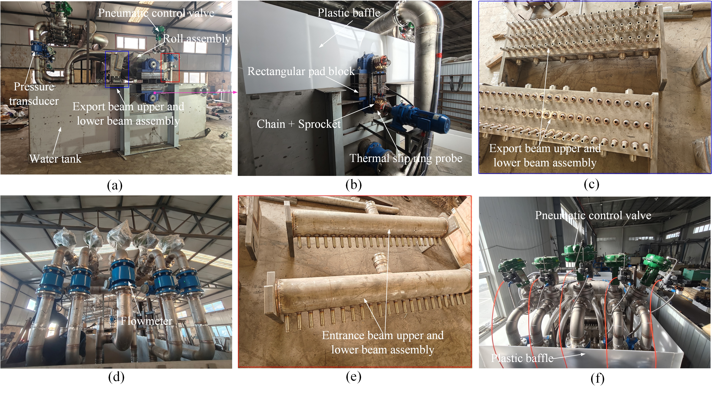

热连轧分区冷却装置及测控系统
一、装置设计与搭建
使用 SolidWorks 独立完成热轧分区冷却模拟装置的结构设计与搭建。

二、软件开发
使用 C# 独立开发离线与在线两套软件，集成温度场模型、热辊型模型、辊系弹性变形模型、板形板凸度模型及水量反算计算，并实现水印模拟云图显示；软件可适配多种轧制产线与工况，用于分区冷却架设计及气动阀开启比例设定。

(a) 离线主界面
三、数据分析与仿真
- 利用 Origin 与 Matlab 对实验数据进行回归分析，标定换热系数；
- 运用 Ansys Fluent 对喷嘴水量干涉进行流体仿真，筛选最优喷嘴分布方案。

(a) 离线主界面